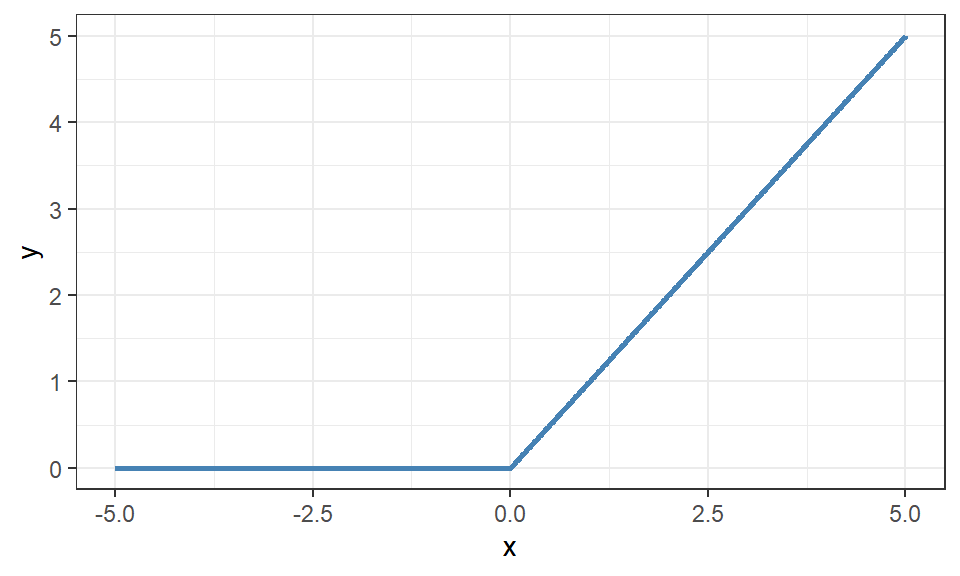
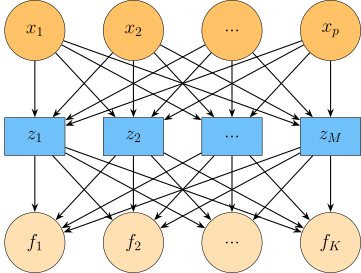

29 Neurala nätverk
Inom maskininlärning är neurala nätverk en stor grupp med komplexa statistiska modeller med en stor bredd att lösa olika problem och analysera olika data. Det är vanligt att dessa modeller använder en hierarkisk representation för att bearbeta och analysera data. Detta innebär att modellen tar en tillgänglig observation, utför beräkningar i flera steg för att till slut få ett predikterat värde. Ur en statistisk synvinkel kan deta ses som en sammansatt funktion eller som att vi gör upprepade variabeltransformationer på data. Ur ett datologiskt perspektiv kan neurala nätverk ses som en avancerad beräkningsmaskin eller ett datorprogram som lär sig från data vad den ska göra.
29.1 Multi Layer Perceptron
För supervised learning kan vi använda feed-forward nätverk, såsom Multi Layer Perceptron (MLP), där informationen endast går åt ett håll i nätverket. På samma sätt som för trädmodeller börjar vi med att visa en övergripande struktur för att definiera några termer som kommer användas frekvent.

I Figur 29.1 innehåller neuroner uppdelat i tre lager; inputlagret bestående av \(p\) förklarande variabler (\(x_1 - x_p\)), ett gömt lager bestående av \(M\) linjärkombinationer (\(z_1 - z_M\)), och ett outputlager bestående av \(K\) klassprediktioner för klassificering eller \(K\) neuroner för de variabler som ska predikteras för regression (vanligtvis en). Figuren visar också hur informationen flödar genom enkelriktade pilar från inputlagret, till det gömda lagret och till sist till outputlagret. Ett feed-forward nätverk kan bestå av ett eller flera gömda lager där kopplingar endast sker mellan neuroner i efterföljande lager, inte inom lagren.
Notera
Det finns väldigt många olika sorters nätverk, en översikt kan hittas här. Alla dessa nätverk kan användas för att lösa många olika problem inom supervised learning eller mer avancerade problem som reinforcement learning.
Inom “vanlig” regression kan vi transformera de förklarande variablerna för att lyckas modellera mer icke-linjära samband, till exempel med polynom eller logaritmstransformationer. Det är dock svårt att veta exakt vilken transformation som behövs för att lösa varje problem och det blir nästintill omöjligt att hantera komplexa datastrukturer såsom text eller bilder. Detta kallas för feature engineering inom maskininlärning, som inom statistik är en gren av databearbetning.
Syftet med neurala nätverkets gömda lager är att automatiskt lära sig lämpliga transformationer av de förklarande variablerna för att lyckas identifiera icke-linjära samband som sedan transformeras linjärt i det sista outputlagret. Denna process kallas för feature learning.
29.2 Feature learning
Anta att vi har data \(\boldsymbol{X} = (x_1, x_2, \dots, x_p)\) där vi kan skapa transformationer av data via en godtycklig funktion \(h(\cdot)\). Det första gömda lagret kan exempelvis formuleras som en linjärkombination av \(\boldsymbol{X}\).
\[ \begin{aligned} z_j = h(x) = \sum_{i = 1}^p w_{ij} x_i \end{aligned} \tag{29.1}\] där \(w_{ij}\) är vikten som läggs på den \(i\):te variabelns koppling till den \(j\):te neuronen. Vanligtvis lägger vi till en bias-term till kombinationen likt ett intercept i vanlig regression som gör lagret/noden mer flexibel men ökar inte komplexiteten mycket.
Denna funktion blir dock fortfarande en linjär transformation, så hur kan vi då modellera något icke-linjärt? Jo, vi kan lägga till en enkel icke-linjär funktion runt Ekvation 29.1 som tillsammans kan skapa en komplex icke-linjär funktion. Den fullständiga formeln för det gömda lagret kan skrivas som:
där \(b_0\) är bias-termen och \(\sigma(\cdot)\) är en så kallad aktiveringsfunktion som bör vara någon enklare icke-linjär funktion.
Aktiveringsfunktionen har historiskt varit någon form av sigmoid funktion, det vill säga en differentierbar och s-formad kurva såsom den logistiska funktionen (se Avsnitt 14.1.1) eller tangens hyperbolicus (tanh). Numera är ReLu eller dess varianter den vanligaste formen av aktiveringsfunktion. ReLu står för Rectified Linear Unit och beskriver en linjär funktion i det positiva området och en annan linjär funktion i det negativa området, tillsammans bildas en väldigt enkel icke-linjär funktion.
\[ \begin{aligned} ReLu(x) = max(0, x) \end{aligned} \]
Det finns många fördelar med att använda ReLu som aktiveringsfunktion till förmån för de historiska sigmoid-kurvorna. Bland annat undviker ofta ReLu att gradienten i optimeringsalgoritmen går mot 0, ett fenomen som kallas för vanishing gradient, samt att beräkningarna i optimeringen endast omfattar enkla beräkningar som jämförelser och addition. Däremot förekommer också några nackdelar såsom att funktionen är icke-differentierbar vid värdet 0 samt att nätverket ibland kan hamna i en situation där alla neuroner inte aktiveras (\(ReLu(x) = 0\)) och därigenom inte fortsätter att optimera.
Outputlagrets aktiveringsfunktion måste bestämmas utifrån responsvariabeln. För regression används identitetsfunktionen om vi tillåter värden från hela tallinjen eller en funktion såsom \(exp()\) om vi bara tillåter positiva värden. För klassificering kan vi använda olika sigmoid-funktioner såsom den logistiska funktionen om responsvariabeln är binär eller Softmax-funktionen om responsvariabeln är nominell.
Softmaxfunktionen normaliserar outputlagrets värden enligt:
\[ \begin{aligned} f_i = \sigma(\boldsymbol{z})_i = \frac{exp(z_i)}{\sum_{j = 1}^K exp(z_j)} \end{aligned} \tag{29.3}\] där resultatet kan tolkas som sannolikheten att tillhöra klass \(i\) för respektive output nod.
Slår vi ihop Ekvation 29.3 och Ekvation 29.2 får vi en ganska utvecklad och komplex formel. Kortfattat kan vi tänka att det neurala nätverket från inputnoderna via de gömda lagrena till outputnoden/noderna lär sig transformationer av de förklarande variablerna för att i sista lagret genomföra linjär/logistisk/multinomial regression på dessa.
CautionÖvning 1
Ett neuralt nätverk används för ett klassificeringsproblem med tre nominala klasser. Nätverkets outputlager ger värdena \(z_1=0\), \(z_2=\log(2)\) och \(z_3=\log(3)\) innan aktiveringsfunktionen appliceras. Softmaxfunktionen beräknar outputvärdet för klass \(i\) som \(f_i=\frac{\exp(z_i)}{\sum_{j=1}^K\exp(z_j)}\). Vilka av följande påståenden är korrekta?
- Falskt. Identitetsfunktionen kan användas när regressionens output tillåts ligga på hela tallinjen. Exponentialfunktionen kan användas när endast positiva värden är tillåtna.
- Sant. Om en konstant \(c\) adderas till samtliga värden multipliceras både täljaren och nämnaren med \(\exp(c)\). Faktorn förkortas bort.
- Falskt. Efter multipliceringen blir de onormaliserade värdena proportionella mot \(1\), \(4\) och \(9\), vilket ger en annan fördelning.
- Falskt. ReLU används i de gömda lagren för att skapa icke-linjära transformationer. Den gör inte att outputvärdena automatiskt summerar till 1.
- Sant. Softmax normaliserar outputlagrets värden och är lämplig när responsvariabeln består av flera nominella klasser.
- Sant. Eftersom \(\exp(0)=1\), \(\exp(\log(2))=2\) och \(\exp(\log(3))=3\) blir nämnaren \(1+2+3=6\).
29.2.1 Fördelar och nackdelar
Universal approximation theorem säger informellt att “En MLP med ett gömt lager och en icke-linjär aktiveringsfunktion kan approximera en godtycklig kontinuerlig eller diskret funktion med ett godtyckligt litet fel givet tillräckligt många gömda neuroner”. Vad detta betyder i praktiken är att neurala nätverk är flexibla och givet en tillräckligt stor modell också har bra prestanda. När klassiska statistiska modeller inte kan hantera mängden observationer, ett stort antal parametrar, eller komplexa samband kan ett neuralt nätverk komma väl till pass för att lösa samma problem.
Detta blir dock också till viss del en nackdel, ett neuralt nätverk kräver mycket data för att lära sig komplexa funktioner samt att nätverket lätt kan överanpassa träningsdata, men en stor nackdel med neurala nätverk är att vi helt tappar den förklarande biten. Modellen blir en “black box” som inte kan beskriva den faktiska effekt som en förklarande variabel har på responsvariabeln som vi är vana vid från vanlig regression.
Tips
På senare tid har metoder utvecklats som utvärderar variablers påverkan på modellens prediktioner som till viss del kan användas för att beskriva effekten av en förklarande variabel på responsvariabeln. Bland annat finns SHAP och LIME (Salih m.fl. (2025) och Ponce-Bobadilla m.fl. (2024)) som ni kan läsa om på egen hand.
CautionÖvning 2
Ett neuralt nätverk används för att modellera ett komplicerat icke-linjärt samband. Nätverket görs mer flexibelt genom att fler neuroner läggs till. Vilka av följande slutsatser är rimliga utifrån Universal Approximation Theorem och materialets diskussion?
- Falskt. Neurala nätverk är ofta svåra att tolka och betraktas därför som black box-modeller, även när de ger bra prediktioner.
- Sant. Universal Approximation Theorem visar att neurala nätverk med tillräcklig flexibilitet kan representera mycket komplexa och icke-linjära funktioner.
- Sant. Ett mer flexibelt nätverk kan anpassa mer komplicerade samband, men flexibiliteten innebär också en större risk att modellen överanpassas till träningsdata.
- Falskt. Neurala nätverk behöver ofta mycket träningsdata för att lära sig komplexa samband och ge tillförlitliga prediktioner.
29.3 Optimering
Till skillnad från de tidigare modellerna som vi gått igenom, skapar optimering av ett neuralt nätverk ett nytt problem som måste lösas. Parametrarna som ska optimeras är nätverkets vikter (och bias) för varje lager men om vi skulle optimera vikterna lager för lager inser vi snabbt att vi inte har något sätt att mäta felet för något annat lager än det sista. Det är enbart för \(f_i\) som vi har observerade värden som kan appliceras i en vald kostnadsfunktion. För att lösa detta problem används backpropagation, en metod som med hjälp av kedjeregler för derivator kan optimera vikterna även i början av nätverket. Denna del är alldeles för matematisk tung för att inkluderas i denna del, utan vi kommer förlita oss på funktioner där detta sker i bakgrunden.
Tips
3Blue1Brown har en väldigt bra illustrativ serie om hur neurala nätverk fungerar, däribland en illustration av hur backpropagation arbetar inom optimeringen.
Titta gärna även på de övriga videorna i Deep Learning spellistan då flera djupdykningar görs som inte tas upp i detta underlag.
För de komplexa problem som neurala nätverk ofta försöker lösa, krävs att vi använder mer komplexa optimeringsalgoritmer. Optimeringen av nätverket är överlag svårt med många lokala optimum i kostnadsfunktionen och ibland miljontals parametrar som ska ändras. Det finns också en ökande kostnad att beräkna den totala gradienten för alla nätverkets vikter vid varje iteration vilket leder oss till nya problem och avvägningar som vi måste ta ställning till.
29.3.1 Batch och mini-batch
Istället för att beräkna hela gradienten på en gång för alla datapunkter kan vi beräkna en väntevärdesriktig skattning av gradienten från ett slumpmässigt urval av data. Träningsdatat i sin helhet kallas för batch och de mindre urvalen kallas för mini-batch vilka tillåter att vi uppdaterar vikterna oftare (fler iterationer) med lite mer variation samtidigt som vi minskar beräkningskomplexiteten. Större mini-batcher ger mindre varians i gradientens skattning men blir dyrare att beräkna så det är en hyperparameter som vi kan justera.
I och med att skattningen inte blir den “sanna” gradienten finns det en risk att vi tar ett felaktigt steg men vi kan då minska dess påverkan genom att minska inlärningshastigheten. Då förhindrar vi att en dålig skattning påverkar algoritmen mycket överlag.
29.3.2 Stokastisk gradient descent
Stokastisk gradient descent (SGD) är en utveckling av gradient descentalgoritmen som använder sig av mini-batches för att förenkla optimeringen. Som tidigare nämnt, behöver inlärningshastigheten (\(\gamma\)) justeras för att ta hänsyn till att vi endast tittar på ett slumpmässigt urval vid varje iteration istället för alla observationer.
Det vanligaste är att vi justerar \(\gamma\) med antalet iterationer enligt någon form av schema, \(\gamma_1, \gamma_2, \gamma_3, \dots\), som uppfyller några krav. Till exempel kan vi bestämma att inlärningshastigheten för iteration \(t\) ska uppfylla \(\sum_{t = 1}^\infty \gamma_t = \infty\) och \(\sum_{t = 1}^\infty \gamma_t^2 < \infty\). Båda uppfylls om t.ex. \(\gamma_t = 1 / t\). Om vi använder “rätt schema” kommer SGD konvergera till ett lokalt minimum.
Backpropagation multiplicerar flera derivator med varandra (med hjälp av kedjeregeln) vilket lätt kan leda till försvinnande eller exploderande gradienter (eng. vanishing och exploding gradient). En försvinnande gradient inträffar när produkten är nära 0 vilket leder till att vikterna inte uppdateras alls medan en exploderande gradient inträffar när produkten är för stor vilket leder till instabil optimering. ReLu som aktiveringsfunktion hanterar båda dessa problem bättre än sigmoid-funktioner men det finns fortfarande tillfällen där även ReLu hamnar i dessa fällor.
Vi kan lägga till ytterliggare en hyperparameter i optimeringsalgoritmen som vi kallar för momentum (\(\alpha\)) som beskriver hur mycket av den gamla derivatan som vi sparar i nästa iteration.
\[ \begin{aligned} v = \alpha \cdot v - \gamma_t \cdot \nabla\hat{c} \end{aligned} \] där \(v\) är den sammanlagda uppdateringen av vikten, \(\gamma_t\) är inlärningshastigheten och \(\nabla\hat{c}\) är kostnadsfunktionens gradient. Vi uppdaterar sedan vikterna genom
\[ \begin{aligned} \theta_t = \theta_{t-1} + v \end{aligned} \] Detta tillåter oss att jämna ut stora steg så att en försvinnande eller exploderande gradient vid en iteration inte fullt ut inträffar. Poängen med momentum är att snabbare hitta bra områden i kostnadsfunktionen och lättare ta sig fram i “svåra” områden.
Varje optimeringsalgoritm måste börja med några initiala värden på parametrarna. Dessa kallas för startvärden. Valet av startvärden påverkar algoritmen tillsammans med de övriga hyperparametrarna, i värsta fall kan vi med dåliga startvärden få stora problem. Eftersom ett nätverk ofta består av tusentals parametrar som vi måste skatta sätts dessa startvärden oftast slumpmässigt, antingen likformigt eller normalfördelat, med värden nära 0. Vi kan också låta algoritmen initialisera flera startvärden för att utforska en större del av felfunktionen. Detta gör att vi minskar risken att hamna i ett dåligt lokalt minimum.
NoteraAndra algoritmer
En nackdel med SGD är att det kan vara svårt att hitta en bra inlärningstakt som passar till alla parametrar. Andra optimeringsalgoritmer såsom RMSProp skalar gradienten beroende på tidigare träning så att vi tar större steg för de parametrar med små derivator och mindre steg för de parametrar med stora derivator. ADAM kan ses som en blanding av RMSProp och momentum och det finns många andra varianter som är lämpliga för olika ändamål.
RMSProp och ADAM är två vanliga val för neurala nätverk och finns tillämpade inom de flesta funktioner. Vi kommer inte titta närmare på detaljerna i detta underlag.
CautionÖvning 3
Vid träningen av ett neuralt nätverk används en slumpmässigt vald mini-batch för att beräkna gradientskattningen \(\nabla\hat{c}\). Skattningen antas vara väntevärdesriktig och inlärningshastigheten följer schemat \(\gamma_t=1/t\). Vilka av följande påståenden är korrekta?
- Sant. Väntevärdesriktighet innebär att gradientskattningens förväntade värde är den fullständiga gradienten.
- Sant. När inlärningshastigheten minskas får en avvikande gradientskattning mindre påverkan på parameteruppdateringen.
- Sant. Skattningen kan variera mellan mini-batcher även om dess väntevärde är korrekt. Väntevärdesriktig betyder därför inte att varje enskild skattning är exakt.
- Sant. Större batcher innehåller mer information och ger därmed mindre variation, men de kräver samtidigt fler beräkningar per uppdatering.
- Falskt. För \(\gamma_k=1/k\) gäller både \(\sum_{k=1}^{\infty}\gamma_k=\infty\) och \(\sum_{k=1}^{\infty}\gamma_k^2<\infty\), vilket är de två krav som anges i underlaget.
- Falskt. En mindre mini-batch innehåller färre observationer och gör därför vanligtvis varje enskild gradientberäkning billigare.
29.3.3 Andra hyperparametrar
Inom neurala nätverk finns många hyperparametrar, alltifrån modellparametrar; nätverkets arkitektur, antalet gömda lager, neuroner i varje lager, aktiveringsfunktioner m.fl., eller optimeringsparametrar; batch-storleken, inlärningshastigheten, val av optimeringsalgoritm m.fl.
En viktig hyperparameter som hör till optimeringsdelen är epoker. En epok är en genomgång av all träningsdata och ger oss en indikation på hur många gånger modellen har sett all data. Modellens komplexitet ökar ju längre träningen pågor vilket motsvarar antalet epoker, så vi har ett intresse av att begränsa optimeringen för att modellen ska vara generaliserbar. Early stopping, att ange en maxgräns för hur många epoker vi tillåter, kan användas som ett konvergenskriterium för att förhindra överanpassning.
Likt alla tidigare former av hyperparameter tuning är det svårt att identifiera vilka parametrar och vilka värden som ger den bästa modellen. Vi måste använda någon form av strukturerad metod, t.ex. grid search, korsvalidering, och inlärningsscheman, för att effektivt utforska kostnadsfunktionen. Det finns också många föreslagna nätverksarkitekturer från litteraturen samt förtränade modeller som kan anpassas om för nya problem vilket kan underlätta. För stora problem kan det ta lång tid att hitta bra hyperparametrar!
Tips
En utav de större ramverken för neurala nätverk är Tensorflow. Det har också skapat ett visualiseringsverktyg där man kan leka runt med olika modeller och se vad som händer.
CautionÖvning 4
Vid träningen av ett neuralt nätverk används backpropagation för att beräkna hur nätverkets parametrar påverkar kostnadsfunktionen. Vilka av följande påståenden är korrekta?
- Sant. Backpropagation använder kedjeregeln för att beräkna hur varje vikt och bias påverkar förlustfunktionens värde.
- Falskt. Backpropagation är inte begränsad till sigmoidfunktioner utan kan även användas i nätverk med andra aktiveringsfunktioner, exempelvis ReLU.
- Sant. Beräkningen börjar vid förlustfunktionen och förs bakåt genom nätverkets lager till de olika parametrarna.
- Falskt. Bias påverkar nätverkets beräkningar och därmed även förlustfunktionen. Bias behöver därför ingå i gradientberäkningen.
- Falskt. Backpropagation beräknar gradienterna. En optimeringsalgoritm använder därefter gradienterna för att uppdatera parametrarna.
- Sant. Optimeringsalgoritmen använder gradienterna för att avgöra hur nätverkets vikter och bias ska justeras.
Referenser
Ponce-Bobadilla, Ana Victoria, Vanessa Schmitt, Corinna S. Maier, Sven Mensing, och Sven Stodtmann. 2024. ”Practical guide to SHAP analysis: Explaining supervised machine learning model predictions in drug development”. Clinical and Translational Science 17 (11): e70056. https://doi.org/https://doi.org/10.1111/cts.70056.
Salih, Ahmed M., Zahra Raisi-Estabragh, Ilaria Boscolo Galazzo, m.fl. 2025. ”A Perspective on Explainable Artificial Intelligence Methods: SHAP and LIME”. Advanced Intelligent Systems 7 (1): 2400304. https://doi.org/https://doi.org/10.1002/aisy.202400304.